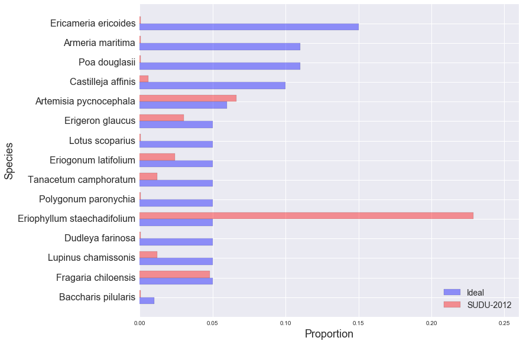

golden gate national parks conservancy: scrub mix
SUDU-2012
EAPO-2011
NMS-2010
NMS-2011
NMS-2012
NUWO-2010
NUWO-2011
NUWO-2012
SUDU-2008
SUDU-2009
SUDU-2010
SUDU-2011
SUDU-2012
Ideal and Observed Scrub Mix, SUDU-2012:
Other Species in SUDU-2012 Sample:
| Species | Observed % |
|---|---|
| Marah fabaceus | 9.64% |
| Bromus diandrus | 8.43% |
| Bare ground | 5.42% |
| Baccharius pilularis | 4.22% |
| Lupinus arboreus | 3.61% |
| Achillea millefolium | 3.01% |
| Grindelia hirsutula | 2.41% |
| Ambrosia chamissonis | 2.41% |
| Rubus ursinus | 1.81% |
| Ehrharta erecta | 1.20% |
| Eschscholzia californica | 1.20% |
| Rumex Salicifolius | 1.20% |
| Melilotus indica | 0.60% |
| Abronia latifolia | 0.60% |
| Albizia lophantha | 0.60% |
| Avena barbada | 0.60% |
| Log | 0.60% |
| Satureja douglasii | 0.60% |
| Vulpia bromoides | 0.60% |
| Solanum | 0.60% |
| Fumaria parviflora | 0.60% |
| Mimulus aurantiacus | 0.60% |
| Bromus hordeaceus | 0.60% |
| Stellaria media | 0.60% |
| dead tree stump | 0.60% |
| Scrophularia californica | 0.60% |
| Oxalis incarnata | 0.60% |
| Festuca rubra | 0.60% |
| Malva neglecta | 0.60% |
| Sonchus oleraceus | 0.60% |
| Claytonia perfoliata | 0.60% |
| Artemisia californica | 0.60% |
| Bromus Carinatus | 0.60% |